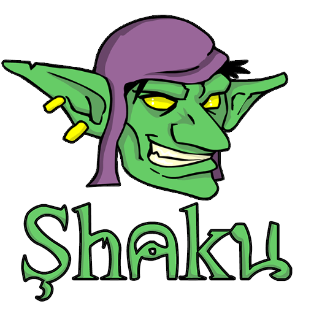

Demos
Shaku is a pure JavaScript framework for web games development that emphasize simplicity, flexability and freedom.
If you don't know it, read more about it here.
The following is a set of small demos to demonstrate different features of Shaku lib.
Basic
- Hello World - how to init Shaku and create a main loop.
- Sandbox - a sandbox application to play around with Shaku.
Gfx
Sfx
Input
Collision
Performance
Miscs
Games
- Snake - a snake game example.
- Fishy - eat smaller fish to grow, dodge bigger fish to survive.
- Tilemap & Camera - a simple tilemap editor with moving camera.